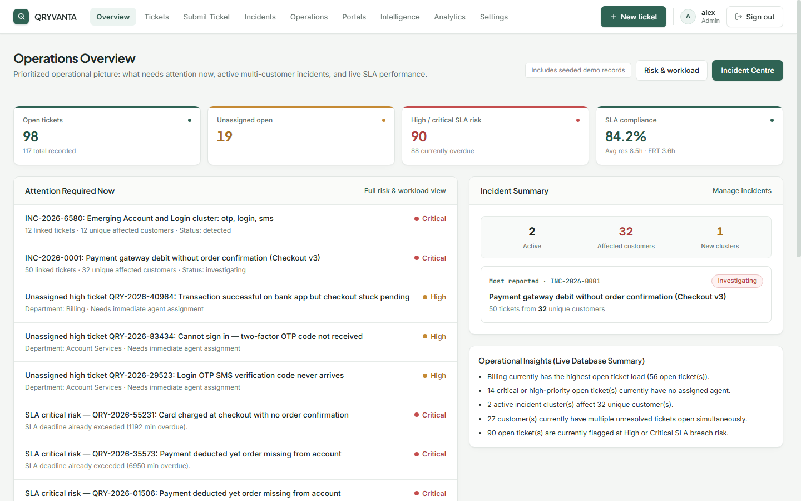

QRYVANTA
SUPPORT OPERATIONS.
A high-efficiency customer service workstation and incident command platform — streamlining customer ticket creation, priority triage queues, live SLA escalation countdowns, and operational incident rooms.

STREAMLINING ENTERPRISE SUPPORT & INCIDENT MANAGEMENT.
Modern customer support breaks down when tickets lack urgency categorization and agents lose track of SLAs. QRYVANTA unifies customer issue intake, agent productivity workflows, and major incident triage.
Customer Self-Service
Clean customer portal for instant ticket submission, dynamic category guides, and real-time status tracking.
Staff Operations Console
Comprehensive agent overview showing open ticket volume, resolution times, agent workload, and priority breakdowns.
Intelligent Ticket Queue
Multi-filter triage queue organizing tickets by urgency, SLA risk, assigned agent, and customer sentiment.
Ticket Conversation Thread
Full chronological customer/agent communication history with internal private notes and canned responses.
Major Incident Centre
Sev-1 and Sev-2 command room for tracking platform outages, linking related user tickets, and broadcasting status updates.
SLA Escalation Matrix
Automated countdown timers triggering visual amber/red warnings before service level agreements breach.
HOW IT WORKS.
Event-driven support CRM architecture backed by FastAPI, React 19, and SQLite.
Ticket Ingestion
Customer submits ticket via web portal or API endpoint.
Priority Scoring
Rule engine assigns severity based on category and impact.
Queue Dispatch
Ticket routed to available support agent with SLA timer.
Agent Resolution
Agent logs responses, updates status, and adds internal notes.
Audit Archival
Resolved ticket stored with complete conversation timeline.
APPLICATION SCREENSHOTS.
Live screens captured from the running application. Click any image to view full size, or follow setup instructions in the GitHub repository.
CRM CAPABILITIES & VERIFIED SPECS.
Key modules, rules, safety checks, and automated test results documented in the repository.
| Subsystem | Technical Implementation | Verified Capability |
|---|---|---|
| SLA Engine | Timestamped deadline counters with tier thresholds | Real-time breach warning notifications |
| Incident Management | Parent-child ticket linking & broadcast banner | Unified Sev-1/Sev-2 response workflow |
| Agent Collaboration | Role-gated private staff notes & audit trails | Seamless ticket re-assignment handover |
| Verification Suite | Pytest backend tests & TypeScript check | 21 / 21 automated tests passed |
CORE TECHNOLOGIES.
Frameworks, databases, visualization tools, and testing libraries used in QRYVANTA.
FUTURE ENHANCEMENTS.
Upcoming improvements planned for QRYVANTA.
EXPLORE SOURCE & DOCS.
View the complete codebase, sample datasets, quick-launch scripts, and automated test suites on GitHub.